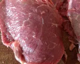
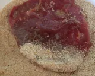

Receta de como hacer Milanesas
Ingredientes necesarios
- 1/2 kg carne para milanesas (a mi me gusta de bola de lomo o peceto)
- 2 huevos
- 200 g pan rallado preferido marrón
- Sal
Receta
- Quitarle la grasa a cada bife y cortarlo en dos o tres. Salar

- Colocar los dos huevos en un bol y batirlos hasta que se una la clara con la yema. Pasar la milanesa por el huevo.
- En otro bol colocar el pan rallado y pasar la milanesa por el pan rallado hasta que quede bien cubierta por ambos lados.

- Repetir los paso con la carne restante.
Volver a la pagina principal